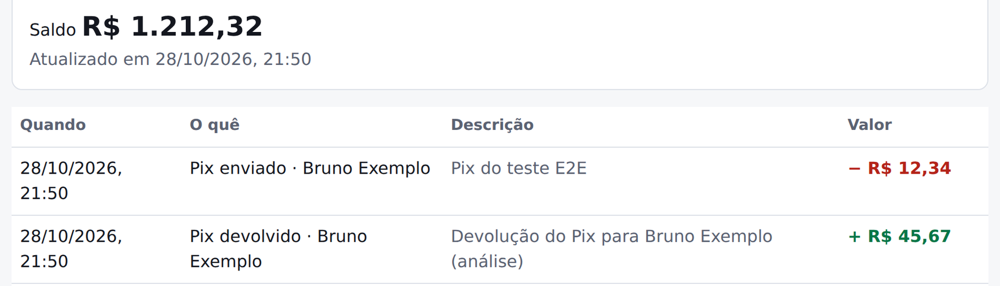

Fase 4 · Segurança e front-end
Todos os testes passavam. O navegador achou 5 defeitos.
Keycloak, dois BFFs e as telas em React. O teste de ponta a ponta faz o que a pessoa faz: entra, envia um Pix e confere o extrato.
localhost:8080 · internet banking

O que só o navegador achou
Um 403 virava 200 com a tela — o erro caía no fallback da SPA
O Pix ia com a chave mascarada (b***@…) em vez da digitada
Depois do login, a pessoa caía num JSON — pedido guardado na sessão
A mensagem do Pix nunca chegava ao extrato — desde a Fase 2
"Saldo indisponível" em toda conta — o falso do teste ≠ a API
404para a conta de outra pessoa: como se não existisse (BOLA)
~1 mso custo do BFF por pedido, medido com Gatling
0 tokensno navegador: o token fica no BFF, a tela só tem o cookie
Keycloak · Spring Cloud Gateway · React 19 · Playwright
844 testes · Java 25 · OAuth2 + PKCE
Alan Joffre
github.com/alanjoffre/ledgerly-bank